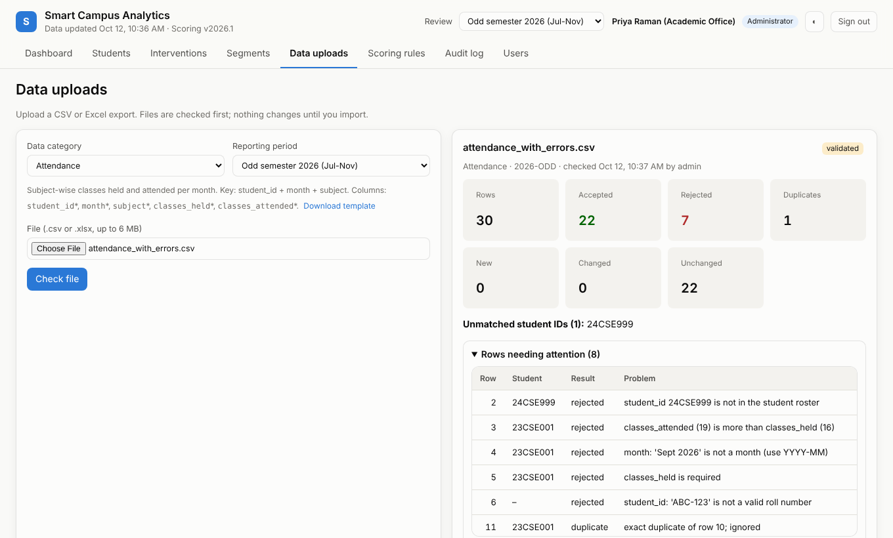
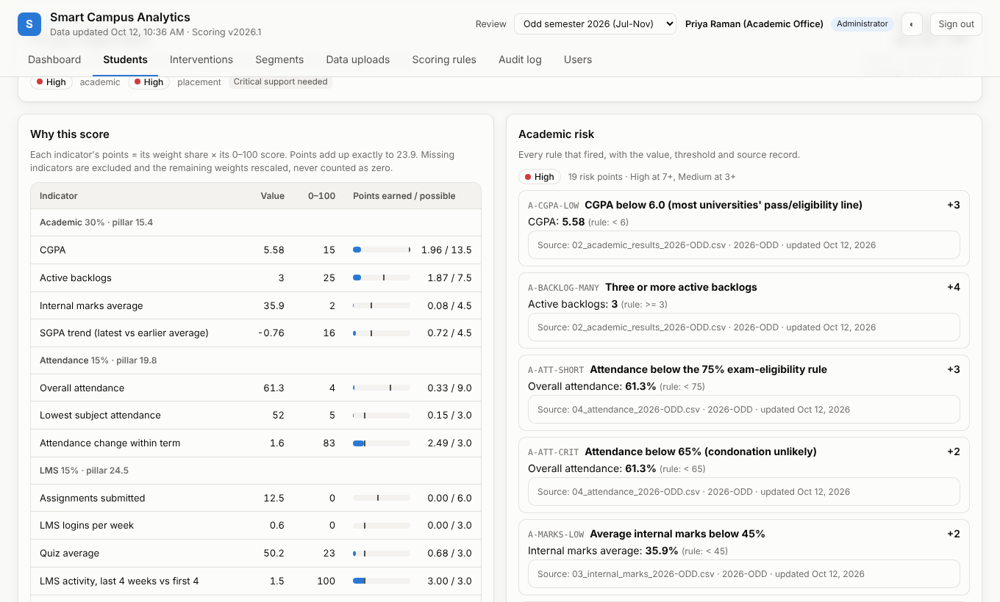
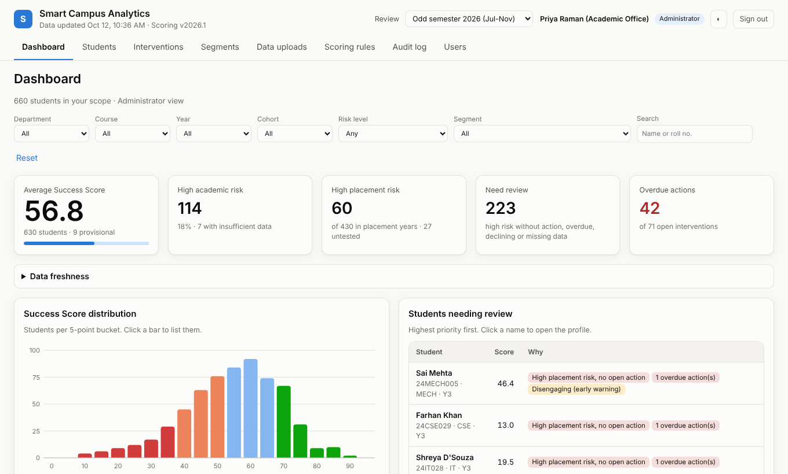
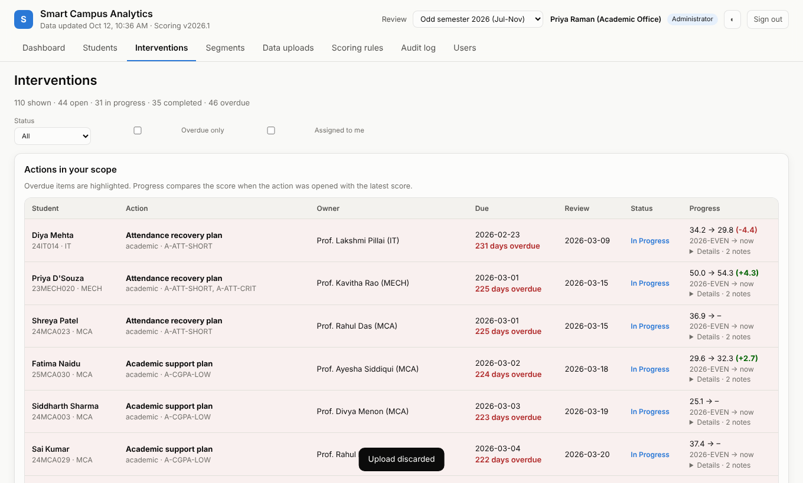

A secure, role-based Student Success Platform. It brings seven data sources into one profile per student, explains every score and risk flag, and tracks each intervention through to its outcome. It runs entirely on the AWS Free Tier.
| Role | Sees | Does |
|---|---|---|
| Administrator | Every student, data quality, audit log | Uploads data, manages users, changes scoring rules |
| Faculty / Mentor | Their assigned mentees, including wellbeing notes | Creates and follows up support actions |
| Placement Officer | Students in placement years; no wellbeing details | Assigns training: coding bootcamp, mock interviews, aptitude |
| Head of Department | Their department | Monitors interventions and adds review notes |
| Student (optional) | Their own score, flags and actions | Sees what is recommended for them |
Sign-in uses Amazon Cognito with optional authenticator-app MFA. Every API call checks the caller's role and scope again. Users can't change their own department or roll number.
Browser ─HTTPS─▶ CloudFront ─▶ S3 (private) frontend │ └ /api/* ─▶ Lambda (Python) API │ ├▶ S3 (encrypted) records, snapshots, │ │ rule versions │ ├▶ DynamoDB 5/5 interventions, audit, │ │ upload log, locks │ └▶ Cognito admin user management └─OAuth code + PKCE─▶ Cognito hosted sign-in (MFA)
| Service | Free-tier allowance |
|---|---|
| Cognito (Lite) | 10,000 monthly active users |
| Lambda + function URL | 1M requests/month; no API Gateway |
| DynamoDB | 5/5 capacity, inside the always-free 25/25 |
| CloudFront | 1 TB and 10M requests/month |
| S3 | A few MB of data |
| IAM | One role scoped to one bucket, one table and one user pool |
python deploy/deploy.py --seed3


A-ATT-SHORT leading to an attendance recovery plan
| At the start of final year… | Poor academic outcome | Not placed |
|---|---|---|
| Academic risk High | 88% | 75% |
| Academic risk Low | 5% | 30% |
| Placement risk High | 81% | 84% |
| Placement risk Low | 7% | 20% |
| Placement: insufficient data | 41% | 56% |
| Score band Critical / Thriving | 96% / 0% | 82% / 13% |
AUC 0.95 for the Success Score against poor academic outcomes, and 0.79 against not being placed. AUC measures how well a ranking separates outcomes: 1.0 is perfect, 0.5 is chance.
Students with no placement test on record did markedly worse than those flagged Low. That is why missing evidence triggers an action instead of reassurance.
900 synthetic students, loaded through the same import path (python -m ssp.validate).
All data shown is synthetic, generated to mimic real campus exports. No real student information is used.